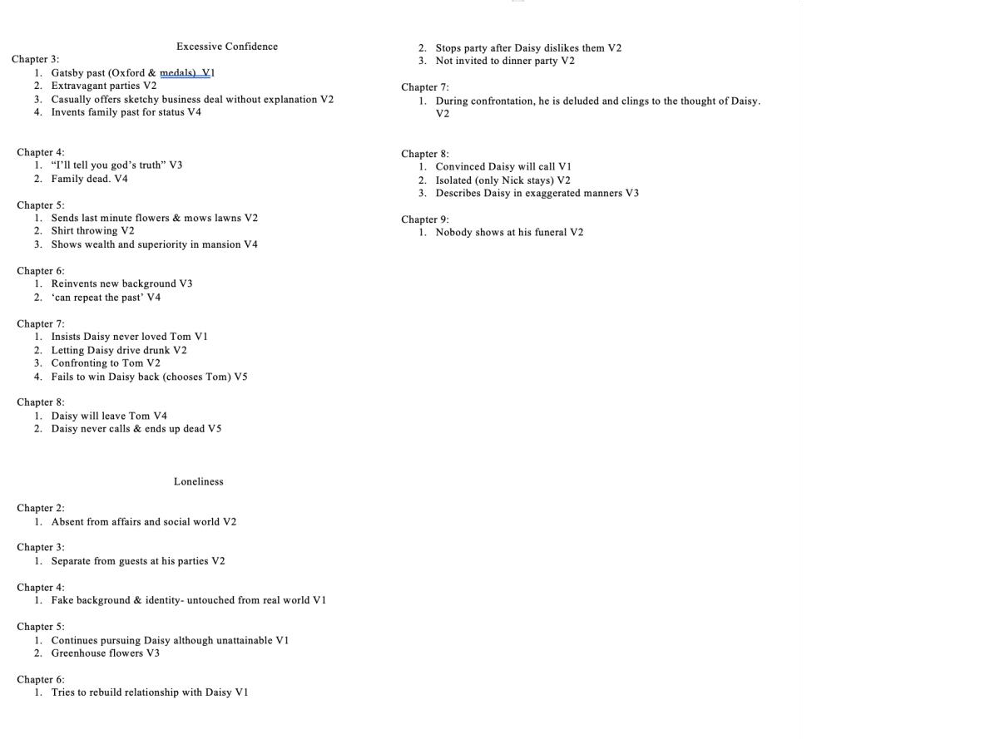
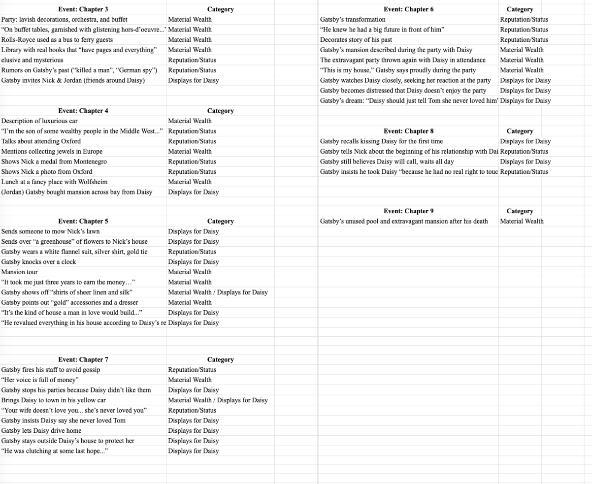

Introduction
From the ancient tragedies of Greece to the modern-day downfalls of business tycoons and political leaders, the concept of hubris has served as a cautionary tale about the perils of unchecked power. The theme hubris was already apparent in Greek tragedies, where it mostly meant disrespecting the gods by not crediting ones’ success or fortune to the gods (Marquez, 2015), often leading to nemesis (divine retribution) and ate (ruin). The meaning of hubris has then evolved into excessive arrogance and over-confidence that leads to self-destruction (Marquez, 2015).
Owen coined the term hubris syndrome to describe how power can distort judgement and behavior, mostly evident in political leaders (2008). As it isn’t a diagnostic category of mental illness, Selten points out that the term still needs further validation since it’s not included in classification systems (2023), but the phenomena it describes is timeless. This syndrome can be observed in literary characters such as Agamemnon and Gatsby. Though written centuries apart, both portray characters whose personality traits lead to their tragic endings.
Aeschylus’s Agamemnon, the first play in the Oresteia trilogy performed in 458 BCE, is one of the greatest works of classical Greek tragedy and explores the tragic downfall of Agamemnon and the revenge of Clytemnestra. Set after the Trojan war, King Agamemnon comes back home to Argos, victorious. Clytemnestra, Agamemnon’s wife, waits for him. She knows that Agamemnon has sacrificed his daughter for favorable winds in order to claim glory that rivals the gods, and harboring deep resentment, plots to kill him in order for revenge. Upon his arrival, Agamemnon further demonstrates his hubris by treading upon a sacred purple carpet, a gesture reserved for the gods, thereby further transgressing the boundaries between mortal and divine. As Cassandra, the prophet, warns him of his tragic fate, Agamemnon ignores her omens. Such disregard sets the stage for his doom as Agamemnon gets killed ultimately by Clytemnestra. His ego makes him believe that he can defy fate and his divine punishment, blinding him from reality and leading him towards death.
Written in 1925, the Roaring Twenties, The Great Gatsby shows a character whose hubris ultimately leads to his downfall. However, while Agamemnon’s defies fate, Gatsby clings to an unattainable dream: the revival of his relationship with Daisy Buchanan. Nick Carraway, the narrator, meets Jay Gatsby, his neighbor, a wealthy man living in the West Egg who throws a party in his mansion every Sunday night, hoping to meet Daisy Buchanan once to rekindle their love. He ignores Daisy’s marriage with Tom Buchanan. Although, Daisy ultimately chooses Tom, Gatsby refuses to acknowledge the impossibility of his dream. His willingness to take the blame for Daisy as accidentally kills Myrtle with Gatsby’s car further illustrates his intense attitude towards chasing his dream. Jay Gatsby shows hubris in his relentless pursuit of an unattainable dream with Daisy, and his unyielding belief in his power, his ability, his wealth and status. Gatsby’s tragic ending underscores the consequences of hubris, and suggests that the American Dream, the green light he longs for, is an illusion only achieved by the privileged.
Literature review
Hubris syndrome, or Hubristic syndrome, is broadly investigated as a personality trait disorder. Scholars increasingly contend that hubris significantly influences many decisions by those in power. Diamandis (2018) suggests it is power which leads to such behaviors, manifesting as overconfidence, lack of self-control, and morally wrong actions. Owen agrees, claiming that the hubristic syndrome usually occurs when people hold power for a long time, making them develop an inflated view of their abilities. Owen identifies 13 symptoms characterizing this syndrome, and claims that individuals with a portrayal of over 3- 4 symptoms acquire such syndrome. For the purpose of this research, symptoms are categorized into three principal categories: vanity, overconfidence, and solitude.
Vanity is an inflated sense of self (Merriam-Webster, 2025). People with such traits tend to base their actions on public perceptions, making decisions based in accordance of how others want to perceive them. Symptom 2 (a preference for taking actions in order to improve their reputation), and 3 (an unreasonable concern with image) directly reflects their occupation with image. Symptoms 1 (viewing the world as a place primarily as an area to seek power and glory), 5 (identifies their motives and outlook identical with the one of the nation) and 6 (tends to talk in third person) demonstrate the desire to create an image of supremacy (Owen, 2008). Excessive confidence is defined as being too confidence in one’s ability or decisions (Merriam-Webster, 2025). This trait involves arrogance, and an inflated sense of one’s judgements and ability, believing one has higher status than others. These symptoms are in accordance with symptom 7 (has excessive confidence of their judgement and disrespects the advice of others), 8 (believes one has supremacy in what they can achieve), and 9 (thinks they’re accountable to a higher power such as god than the public opinion) (Owen, 2008). Overconfidence would lead one to ignore their incompetence (Myers, 2019 ), leading to reckless behavior and ignorance in some problems. This is similar to that of symptoms 10 (exhibits reckless, impulsive and restless behavior),12 (tends to have a ‘broad vision’, making them ignore practical details, costs, and potential negative consequences), and 13(makes these mistakes not due to fault analysis, but due to lack of attention caused by overconfidence) (Owen, 2008). Solitude means the state of being alone from a society (Merriam-Webster, 2025). In this context, it means the isolation of oneself, often becoming detached from reality (symptom 11: loses contact with reality, becoming progressively isolated). People who have a fervent attitude on what they do, shown in symptom 4 (has a fervent attitude on the things they do and tend to have exaltation in manner), tend to further isolate them from society (Owen, 2008).
This categorization allows for a systematic analysis of hubristic traits in literary characters, examining how such traits contribute to their eventual downfall. The framework is based on the assumption that prolonged exposure to power fundamentally alters judgment, increasing susceptibility to irrational behavior.
Classical literature has long examined the theme hubris, with ancient Greek tragedies portraying it as a fatal flaw that leads to severe consequences. Icarus falling to death as the flew too close to the sun (Ovid, 8 CE) demonstrates overconfidence, as he ignores Daedalus’ warnings and tries to defy human limitations. Hubris was also apparent in other works, as Doko described multiple characters such as Beowulf, King Lear, and Gatsby with such characteristics (2021). He claimed that the errors they made, for example, King Lear’s pride blocked him from distinguishing lies and the truth, becomes the reason for their tragic ends. Hidayati explored hubris syndrome in Moby Dick, arguing that Ahab’s reckless pursuit of the whale leads him to the isolation of his crew, leading to their deaths (2021). This confirms Owen’s proposition that Hubris syndrome causes irrational behaviour, leading to his tragic end.
Gap and Research question
Owen uses political figures in history such as George W. Bush, Margaret Thatcher, and Tony Blair to show that the hubris syndrome is applicable in real life (Owen, 2008), while Selten (2023) highlights Napoleon Bonaparte and Mao Zedong as further examples.
Notably, Owen’s work bridges the gap between psychological analysis and historical documentation, helping people understand how the hubris is manifested in real-life contexts. However, his emphasis on political leaders leaves room to explore hubris beyond political history, particularly in literary narratives. Hidayati, Arifuddin (2021) has already inspected its exhibition in only one book- Moby Dick, where the captain of a whale hunting vessel, Ahab portrays hubris syndrome as he constantly seeks down the white sperm whale named Moby Dick. Literature works offer insights in the potential consequences of human behavior, serving as cautionary reflections that deepen our understanding for real life. However, this article remains isolated as other literature articles analyze the theme hubris but not the syndrome. Little research systematically analyzes hubristic traits across multiple literature works in different eras.
This paper argues that while hubristic syndrome was not formally defined until the late 20th century, its expressions are clearly evident in historical and literary figures across different eras. Choosing two literature pieces from different eras, this study will examine the presence and impact of hubristic syndrome in two distinct literary figures: Agamemnon in Aeschylus’s Agamemnon and Jay Gatsby in F. Scott Fitzgerald’s The Great Gatsby. This analysis will explore the specific traits associated with hubristic syndrome, trying to diagnosis the characters of this syndrome and discover how it ultimately contribute to their tragic fates. This study aims to contribute to a broader understanding of how the hubris syndrome manifests across time periods and cultural context, offering a novel application for Owen’s work. Therefore, this research seeks to answer the following question: 1) How do the characteristics of Agamemnon in Aeschylus’s Agamemnon and Jay Gatsby in F. Scott Fitzgerald’s The Great Gatsby manifest the hubristic syndrome as defined by Owen? 2) To what extent does their downfall illustrate the consequences of this syndrome? While not trying to validate the syndrome clinically, the study tries to provide literary validation and applicability.
Based on this premise, the study hypothesizes that hubristic syndrome was portrayed throughout the two pieces of literature, and served as a key factor in the downfall of the characters.
Methodology
This study employs a qualitative content analysis methodology (Miles and Huberman, 1994 ; Krippendorff, 2018) to investigate how hubris is depicted in literature. The primary data sources are Aeschylus’s Agamemnon and F. Scott Fitzgerald’s The Great Gatsby. These works were selected for their thematic relevance to hubris and their influence on their respective literary traditions. The analysis seeks to identify symptoms that reflect hubristic syndrome, following Owen’s (2008) framework. Given the scope and timeframe of the study, only two pieces of literature were selected, and symptoms were extracted from a few chapters with the appearance of such character.
The content is segmented into units including character trait or significant plot events. The study examines how these behaviors and themes are expressed within the narratives and highlights their implications, including the consequences of these hubris-driven actions. To enhance reliability, a quantitative study was employed in looking at the prevalence of each characteristic in the literature pieces. A quantitative frequency count was conducted in looking at the appearance of each trait. The appearance of symptoms in each event was counted and summed up, utilizing a basic spreadsheet software for data organization. An integration of qualitative interpretation with quantitative data allows for a nuanced understanding of the extent to which characters portray hubris syndrome.
Results
Table 1: Vanity in The Great Gatsby
| Chapter | V1: Material Wealth | V2: Reputation/Status | V3: Display for Daisy | Total Vanity Mentions |
|---|---|---|---|---|
| 2 | 0 | 0 | 0 | 0 |
| 3 | 4 | 2 | 1 | 7 |
| 4 | 2 | 2 | 2 | 6 |
| 5 | 2 | 1 | 5 | 8 |
| 6 | 3 | 3 | 3 | 9 |
| 7 | 2 | 2 | 5 | 9 |
| 8 | 1 | 1 | 2 | 4 |
| 9 | 0 | 1 | 0 | 1 |
| Total | 14 | 12 | 18 | 44 |
In The Great Gatsby, I looked at the prevalence of each trait in chapter 2-7, where Gatsby appeared. I separated each trait into smaller symptoms, calculating the number of times each trait appeared in each chapter, and added them up to look at the total mentions. The analysis of Gatsby’s portrayal revealed a total of 44 indications of vanity, suggesting a significant emphasis on this trait in his characterization during chapter 2 to chapter 9. The data indicates that Gatsby portrayed the trait vanity most, followed by 17 mentions of excessive confidence and 13 mentions of loneliness.
Table 2 : Excessive Confidence in The Great Gatsby
| Chapter | V1: Disrespect for Others’ Judgments | V2: Reckless Impulsive Behavior | V3: Thinks Accountable to Higher Power | V4: Believes in Supremacy | V5: Mistakes due to overconfidence | Total Excessive Confidence Mentions |
|---|---|---|---|---|---|---|
| 2 | 0 | 0 | 0 | 0 | 0 | 0 |
| 3 | 1 | 2 | 0 | 1 | 0 | 4 |
| 4 | 0 | 0 | 1 | 1 | 0 | 2 |
| 5 | 0 | 2 | 0 | 1 | 0 | 3 |
| 6 | 0 | 0 | 1 | 1 | 0 | 2 |
| 7 | 1 | 2 | 0 | 0 | 1 | 4 |
| 8 | 0 | 0 | 0 | 1 | 1 | 2 |
| 9 | 0 | 0 | 0 | 0 | 0 | 0 |
| Total | 2 | 6 | 2 | 5 | 2 | 17 |
Table 3: Loneliness in The Great Gatsby
| Chapter | V1: Loses Contact with Reality | V2: Progressively Isolated | V3: Fervent Attitude/Exalted Manners | Total Loneliness Mentions |
|---|---|---|---|---|
| 2 | 0 | 1 | 0 | 1 |
| 3 | 0 | 1 | 0 | 1 |
| 4 | 1 | 0 | 0 | 1 |
| 5 | 1 | 0 | 1 | 2 |
| 6 | 1 | 2 | 0 | 3 |
| 7 | 0 | 1 | 0 | 1 |
| 8 | 1 | 1 | 1 | 3 |
| 9 | 0 | 1 | 0 | 1 |
| Total | 4 | 7 | 2 | 13 |
In Agamemnon, I separated the play into different events according to Agamemnon’s actions or speech. Then I observed what symptoms each event indicated. In total, 6 symptoms were present, suggesting that Agamemnon has the hubris syndrome. With an average of 1.8 identified symptoms of hubris syndrome across the five key events analyzed in Agamemnon (Table 4), the data suggests that manifestations of hubristic traits were not isolated occurrences but rather a consistent element within the play.
Table 4: Portrayal of Symptoms of Hubris Syndrome in Agamemnon
| Event | Symptoms Identified | Count |
|---|---|---|
| Starts Trojan War | Impulsiveness (Symptom 10) | 1 |
| Sacrifices daughter | Power over others, justification for immoral act (8, 10) | 2 |
| Return to Argos | Impulsive behavior, disrespect for Clytemnestra (7, 10) | 2 |
| Steps on red carpet | Conflict in image (3) | 1 |
| Ignores Cassandra’s prophecy | Supremacy, lack of fear of divine consequence (8, 10) | 2 |
| Death (refuses to acknowledge danger) | Overconfidence, lack of self-awareness (7) | 1 |
| Total | 9 | |
| Number of Events Analyzed | 5 | |
| Event-to-Symptom Ratio | 1.8 |
Discussion
1. Vanity
Vanity is a symptom of hubris syndrome, manifesting as a deep, constant obsession with how others perceive the individual. This fixation increases the importance of one’s public persona, which becomes central to their identity. Such individuals view their image as paramount, believing that it must be perfect or associated with high power and wealth in order to achieve superiority. This behavior leads to constant efforts in consolidating their social position, control how others see them, and any perceived threat to this image—such as criticism or failure—may provoke defensive or aggressive reactions. Not only so, individuals start to put emphasis on the voices of others, highly aware of how others would perceive them, thoroughly thinking on how to act to maintain such image (Webster, 2014). Both Agamemnon and Gatsby portrayed a great extent of concern with image, Agamemnon as maintaining his image as loyal and obedient to the gods, and Gatsby as maintaining his fake image as the wealthy and powerful.
After winning the war, Agamemnon is greeted by Clytemnestra who urges him to step onto the crimson carpets, only greeted by the feet of the gods to step upon (Britannica, 2024). His hesitation upon the offer reveals his anxiety over appearing arrogant in front of the gods and his citizens. He states that only such commodities could only be used on god, politely declining Clytemnestra’s offer. He also refuses with ‘the people murmur, and their voice is great in strength’ (Aeschylus, 458 BCE. l.938), concerned that his disobedience towards the gods would wreck his image among citizens. Ultimately, he gives in, rationalizing his behavior through Clytemnestra’s suggestion. This uncertainty contrasts sharply with his prior decisiveness during the sacrifice of his daughter, showing an unreasonable concern with image. During the sacrifice, he defiantly issued commands without hesitation and acknowledgment of other people’s thoughts, claiming - “May it be well” (Aeschylus, 458 BCE. l.217). This suggests an inconsistent evaluation of his public image relative to political ambition, making his concerns unreasonable.
Similarly, in The Great Gatsby, Gatsby exhibits a relentless commitment in constructing his image of wealth and status. Although originating from a humble origin, he is concerned with his fake image of immense wealth and status to fit into the world of the elite. As he tells Nick, the narrator, of his background, “His right hand suddenly ordered divine retribution to stand by. “I am the son of some wealthy people in the middle-west- all dead now. I was brought up in America but educated at Oxford because all my ancestors have been educated there for many years. It is a family tradition.” (Fitzgerald, 1925, p.70), he puts emphasize on his family wealth and education but the vagueness suggests an intentional fabrication, intended to help him fit into high society. Moreover, he repeatedly emphasizes his image, including his financial status. When Nick questioned his wealth “I thought you inherited your money?” (Fitzgerald, 1925, p.96), he responds automatically with the narrative below: “I did, old sport” he said automatically, “but I lost most of it in the big panic- the panic of the war” (Fitzgerald, 1925, p.96). He instinctively tries to maintain his titled image. Although his response suits the tone of the upperclassmen, it highlights the fragility of his persona. If he inherited his money, he never should’ve needed 3 years to earn it. The contradictions indicate that Gatsby is concerned with image as his entire existence is built around it, making any disruption of his image vulnerable to his downfall.
2. Excessive Confidence
Excessive confidence leads to poor decision making as it tends to cause individuals to overestimate their abilities or underestimate the challenges they’re facing. Overconfidence is sometimes beneficial as it boosts morale, ambition and increases one’s competition and survival (Johnson & Fowler, 2011). However, excessive confidence can lead to blindness and may impair self-reflection, making failure a persistent outcome in one’s journey (Hidayati et.al. 2021). Fast asserts that when people experience power, they tend to make overconfident decisions that lead to negative outcomes, or ultimately, personal downfall (2011). Overconfidence can be manifested in three different aspects, 1) in the overplacement of believing one to have superior performance than others, 2) in overpercision regarding the accuracy of one’s judgements, 3) in overestimating one’s performance abilities (Moore & Healy, 2007). Both Agamemnon and Gatsby portray this trait, exhibiting unwavering faith in their goals, leading to negative consequences.
He also shows overconfidence in his decision to sacrifice his daughter, Iphigenia. Although Agamemnon experiences internal struggle regarding the sacrifice, he ultimately does so. However, he fails to see the consequences after sacrificing his daughter to secure victory in the Trojan War. Additionally, this act highlights his authority as he is able to extert control over the lives of others.
“Once trapped, she wept, called on her father’s name— as if Iphigeneia’s maidish scream could move his crew of genocidophiles, his entourage of death-squads; or move him.” (Aeschylus, 458 BCE, l.228)
He commands soldiers to hold Iphiegnia down, asserting his authority while ignoring her pleas of life. His disregards demonstrate his belief in absolute authority, extending to family members, revealing a detachment from moral responsibility and familial compassion. He is confident to assume that he can compel others to participate in this horrific act without consequence. He overestimates his power regarding the lives of his family, since he sees himself as the one who can determine the fate of those around him, including his daughter. He neglects how Clytemnestra thinks, and thus fails to consider the consequences the act would bring to the whole family. “So with relief he gave it Necessity’s name. Once necked in his yoke, though, we smelt off him something unclean, something desanctified, something set free to defile; new look in his face that said All is permitted for me.” (Aeschylus, 458 BCE, l.218)
Agamemnon rationalizes his decision by calling it a necessity, convincing himself that it was inevitable. He aligns such matters with the act of the whole nation, claiming it to be for the sake of war. While he frames his decision for the benefit of the nation, the essence of the war was driven my personal motives in retrieving Helen. As he accepts the sacrifice, he no longer seems bound by moral constraints, as if he now believes he can do anything. This could imply his corrupting nature of power and the moral decay that follows his decision.
Agamemnon’s overconfidence also lies in his conviction that his sacrifice is justified for the sake of victory. His desire of victory, that is, to bring Helen back, to demonstrate the powers of the Greek supersedes the lives of those around him, including his own daughter. The morally questionable decision made by him seems to bring harm as he fails to estimate the moral consequences that would bring him. He sees his vision of the future (victory in Troy) as so important that it justifies any action, including extreme violence, like sacrificing Iphigenia. His reckless behaviour (symptom 10) is portrayed through the chorus elder’s words, “So I won’t try to hide from you, my lord, that when you led your army forth—for Helen— you cut a figure I could not applaud. Your plan seemed ill-conceived and uncompelling: to send an army out to die in war to win back what—a voluntary whore?” (Aeschylus, 458 BCE, l.800). The elder exposes a deep skepticism toward the rationale for the Trojan expedition, suggesting that Agamemnon’s actions were perceived as impulsive, irrational, and reckless. This critique implies Agamemnon’s reckless acts, pointing to a broader erosion of confidence in Agamemnon’s judgment.
Agamemnon shows overconfidence through his dismissals of the consequences happening in his palace. He ignores the warnings from Cassandra, the oracle; and he portrays no remorse for his daughter after winning the war. Agamemnon’s greatest threat comes from within his own home. Clytemnestra has spent years plotting his demise, seeking both revenge for Iphigenia and power over Argos. Even when Cassandra warns him of his impending doom, Agamemnon dismisses the danger, assuming that no one in his household would dare challenge him. Upon being struck down, he claims “And now—in my own house—you strike me down?” (Aeschylus, 458 BCE, l.1344). The phrase ‘in my house’ further depicts his surprise; he perceives his household as an extension of his power, not anticipating any disobedience. Ultimately, Clytemnestra’s act dismantles Agamemnon’s belief and illusion in achieving supremacy and power.
Agamemnon’s overconfidence blinds him from suspecting betrayal and leaves him vulnerable, unable to defend himself when the moment of vengeance arrives. In the end, his overconfidence—his certainty that no one, especially not his wife, could defy him—proves to be his undoing.
In contrast, Gatsby shows immense confidence in his ability to recreate his relationship with Daisy. He believes that their love has remained unchanged, despite Daisy’s marriage to Tom Buchanan. Gatsby is certain that he could rekindle their love, making him ignore potential limitations. This is portrayed through his words in chapter 6, “‘Repeat the past?’ He cried incredulously, ‘why of course you can!’… ‘I’m going to fix everything just the way it was before,’ he said, nodding determinedly, ‘she’ll see.’” (Fitzgerald, 1925, p.118).
Gatsby’s overconfidence blinds him to Daisy’s divided loyalties. As Nick tells him about Daisy’s attachment with Tom, he refutes with “‘I don’t think she ever loved him.’ Gatsby turned around from a window and looked at me challengingly.” (Fitzgerald, 1925, p.137). His refusal to acknowledge Daisy’s past and love life with Tom illustrates his excessive confidence in his judgment and his disregard of the advice of others. His entire faith had been built on the fantasy that Daisy’s love would return to him. However, he was blinded by confidence and failed to account for the gap between reality and fantasy, contributing to his final downfall.
3. Loneliness
Loneliness is an unpleasant feeling occurring in a person when one’s social network is too small or lacks emotional closeness. The feeling arises either when one has few friends or when the intimacy of such relationships hasn’t been fulfilled (Jong-Gierveld, 1998). Prolonged loneliness then progresses into isolation, a social condition rather than a feeling. Isolation occurs when an individual feels alone because they are, in fact, disconnected from others—whether due to the absence of relationships or the failure to establish deep emotional bonds. This state of isolation is particularly harmful because it reinforces feelings of helplessness, inadequacy, and emotional emptiness. As Hunt et al. (2017) highlight, prolonged loneliness and isolation can have detrimental effects on a person’s physical and mental health, contributing to a weakened immune system, cardiovascular diseases, suicidal behavior and dementia. Loneliness is influenced by various factors, including the quality and availability of relationships, personality traits, societal norms, and an individual’s capacity to adjust to changing circumstances (Jong-Gierveld, 1998). This understanding of loneliness can be applied to The Great Gatsby, as Gatsby’s illusion in the American Dream distances himself from society, while Agamemnon doesn’t exhibit significant signs of loneliness.
Agamemnon, unlike Gatsby, does not distance himself from reality, nor is he stuck in his illusions. He aspires to win the Trojan War, which results in tangible achievements. He does not have a fervent attitude in trying to achieve any goals. It could be pointed out that he is fervent in trying to attain absolute power and supremacy, particularly in his belief of his power over life and death, but it isn’t depicted much in the text. His pursuit of his goals suggests more of a reliance on his status as a king that supports his execution of orders, rather than using a fervent attitude. This contrasts with Gatsby, who centers his character in a passionate pursuit of his dream.
Gatsby is stuck in his illusions, disassociating himself from reality. He’s stuck in his beliefs, sure that he will attain the American Dream he pursued relentlessly, and that Daisy will come back. The narrator mentioned Gatsby standing at the dock, staring into the distance. He commented, “Gatsby believed in the green light, the orgastic future that year by year recedes before us.” (Fitzgerald, 1925 p.193). Gatsby is devoted to his dream. He is obsessed, so much that it turns into a symbol of his undying hope, becoming a central part of his identity. He chases it fervently, slowly isolating himself from society. Even with the huge parties he has thrown, he still feels emotionally isolated as nobody truly understands him. This disassociation also appears at the end of the book, where no one comes to his funeral except Nick.
One example of Gatsby’s fervent attitude towards his illusions is when he invites Daisy to afternoon tea. After he asks Daisy to afternoon tea at Nick’s cottage, he looks at the surroundings and ordered for Nick’s grass to be cut. “The flowers were unnecessary, for at two o’clock a greenhouse arrived from Gatsby’s, with innumerable receptacles to contain it.” (Fitzgerald, 1926, p. 90). While it would be customary to bring a few flowers for such an occasion, Gatsby decides to overwhelm the cottage with an excessive amount of flowers, transforming it into a greenhouse. This reflects his intensity and passion in trying to rekindle his romance with Daisy, aligning with symptom 4.
“Daisy put her arm through his abruptly but he seemed absorbed in what he had just said. Possibly it had occurred to him that the colossal significance of that light had now vanished forever. Compared to the great distance that had separated him from Daisy it had seemed very near to her, almost touching her.” (Fitzgerald, 1925, p.100). Gatsby here shows Daisy around his mansion, while they were standing at the balcony, looking into the green light. During the moment, Gatsby briefly recognizes that his whole identity was based on pursuing the idealized version of Daisy, which was someone who he could never attain. Even the Daisy right beside him was unattainable due to social and personal barriers between them. Nevertheless, instead of accepting this realization, Gatsby chooses to suppress his doubts and continue chasing his vision with even greater intensity. This denial of reality not only illustrates Gatsby’s deepening obsession but also marks the beginning of his progressive isolation, as he increasingly distances himself from the world as it truly is in favor of his unattainable ideal.
Conclusion
Using the three main traits of hubris syndrome to interpret the characteristics of the Agamemnon and Gatsby; the results show that Agamemnon and Gatsby both portray Hubris syndrome summed up by three main traits: Vanity, Overconfidence and Loneliness. Gatsby fabricates a background of wealth and prestige to maintain his constructed identity. He displays overconfidence in estimating his abilities of winning Daisy back, making him ignore Daisy’s dilemma. His fervent attitude in chasing the American dream makes him isolated. His relentless pursuit of the dream caused Daisy to abandon him and led him to his demise. Agamemnon shows concern with his image as he returns home. He seeks for power and greatness, but he is concerned of vengeance from the gods. He demonstrates overconfidence by killing his daughter, convinced it was a necessary act. He is confident that it’s the right decision, but he is blinded and unaware of the plotting inside the palace to kill him. Although so, he shows little isolation as he didn’t portray exaltation in his actions. His overconfidence and pride eventually led to his death, participating in his downfall.
The results provide additional support for Owen’s application of Hubris syndrome (2008). The portrayal of Hubris Syndrome by the two characters suggests the recurring presence of such syndrome across fictional portrayals from different periods. Hubris syndrome is related with each of the characters’ tragic endings, suggesting that it could bring detrimental effects if not dealt with carefully.
Limitations, Implications and Further Research
There are a few limitations that should be considered. First, regarding internal validity, the content analysis was conducted by one person without peer discussions or cross- validation, making interpretations subjective and reducing the consistency of the findings. This also reduces reliability, as interpretations may differ if repeated by other researchers. In addition, the two passages selected were from western literature on male characters, making it not as generalizable to other cultures or gender perspectives, where hubristic traits could vary.
Nevertheless, this still shows that hubris syndrome dominates the plot trajectories, illustrating that hubris syndrome plays a role in one’s tragic ending. Manifestations of the syndrome could also support its broad range of application, even in literature.
Future research could consider analysing hubristic syndrome in different cultures, for example, eastern culture or females to further broaden the applicability of findings. There could also be in depth interviews or discussions with one or more researchers to enhance the validity and reliability of interpretations.
Works Cited
Aeschylus (n.d.) Agamemnon. Open university. https://www.open.ac.uk/people/sites/www.open.ac.uk.people/files/files/aeschylus-agamemnon-definitive.pdf
Diamandis, E. P., & Bouras, N. (2018). Hubris and Sciences. F1000Research , 7 , 133. https://doi.org/10.12688/f1000research.13848.1
Doko, F. (2021). HUBRIS AS A SELF DESTRUCTIVE FORCE – EXAMPLES IN ENGLISH AND AMERICAN LITERATURE. KNOWLEDGE - International Journal , 49 (6), 1173–1177. http://ikm.mk/ojs/index.php/kij/article/view/448 4
Fast, Nathanael. J. Sivanathan, N. Mayer, D. Nicole. Galinsky, D. Adam (2011). Power and overconfident decision-making. Organizational Behavior and Human Decision Processes, Volume 117, Issue 2, 2012, Pages 249-260, https://doi.org/10.1016/j.obhdp.2011.11.009.
Fitzgerald. Scott. (1925) The Great Gatsby. Planet ebook. https://www.planetebook.com/free-ebooks/the-great-gatsby.pdf
Greekerthanthegreeks. (2025, January 4). Did you know the red carpet originated in Ancient Greece?. Greeker than the Greeks. https://greekerthanthegreeks.com/did-you-know-the-red-carpet-originated-in-ancient-greece/
Johnson, D. D. P., & Fowler, J. H. (2011). The evolution of overconfidence. Nature, 477(7364), 317–320. doi:10.1038/nature
Krippendorff. K ( 2018 ) Content analysis- an Introduction. Retrieved from April 29, 2025, from https://d1wqtxts1xzle7.cloudfront.net/35270347/Content_Analysis_- an_introduction.pdf
De Jong-Gierveld, J. (1998). A review of loneliness: Concepts and definitions, determinants and consequences. Reviews in Clinical Gerontology, (8), 73-80. https://doi.org/10.1017/S0959259898008090
Leigh-Hunt, N., Bagguley, D., Bash, K., Turner, V., Turnbull, S., Valtorta, N., & Caan, W. (2017). An overview of systematic reviews on the public health consequences of social isolation and loneliness. Public Health, 152, 157– 171. doi:10.1016/j.puhe.2017.07.
Merriam-Webster. (n.d.). Overconfident definition & meaning. Merriam - Webster. https://www.merriam-webster.com/dictionary/overconfident
Merriam-Webster. (n.d.). Solitude definition & meaning. Merriam-Webster. https://www.merriam-webster.com/dictionary/solitude
Merriam-Webster. (n.d.). Vanity definition & meaning. Merriam-Webster. https://www.merriam-webster.com/dictionary/vanity
Miles, M. B., & Huberman, A. M. (1994). Qualitative data analysis: An expanded sourcebook (2nd ed.). Sage Publications. Retrieved April 29, 2025, from https://vivauniversity.wordpress.com/wpcontent/uploads/2013/11/milesandhuberman1994.pdf
Moore, D. Healy, P. ( 2008 ). The Trouble With Overconfidence. Psychological Review, Vol 115(2). 502 - 517.
Ovid. (n.d.). Metamorphoses (A. D. Melville, Trans.). The Ovid Collection. Retrieved April 29, 2025, from https://ovid.lib.virginia.edu/trans/Metamorph8.htm
Webster, M., Hoogland, C., Schurtz, D., & Smith, R. (2014). Excessive Image Concern and Willingness to Incur Personal Cost in the Experience and Perception of Vanity. Self and Identity , 13, 613 - 637. https://doi.org/10.1080/15298868.2014.892025.
Appendix A

Frequency counts of Gatsby’s loneliness and excessive confidence (with direct event)
Appendix B

Frequency counts of Gatsby’s vanity (with direct events).